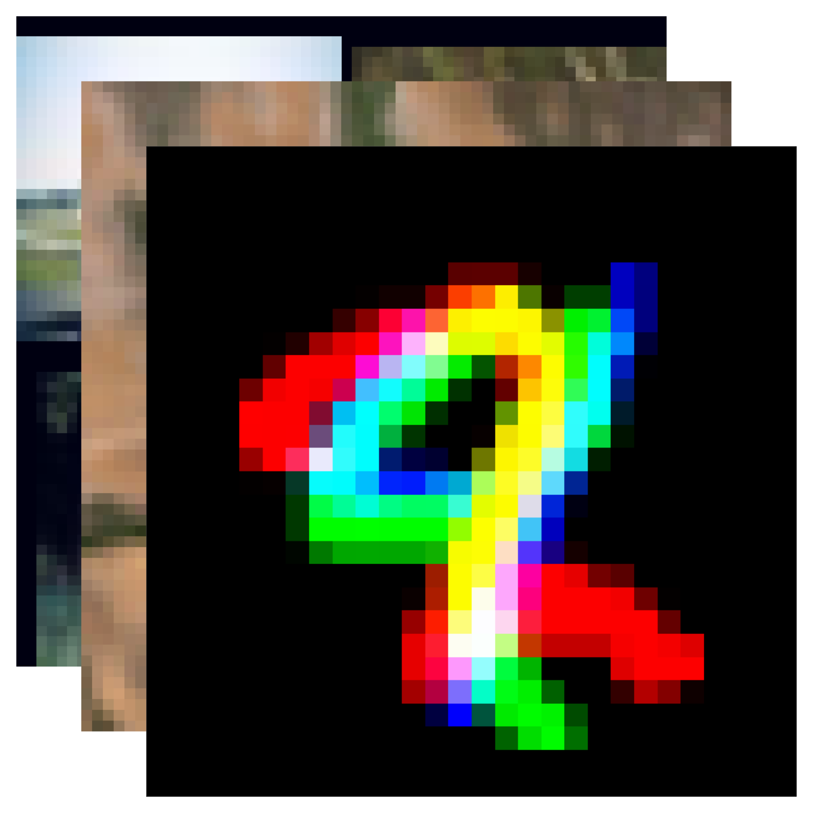
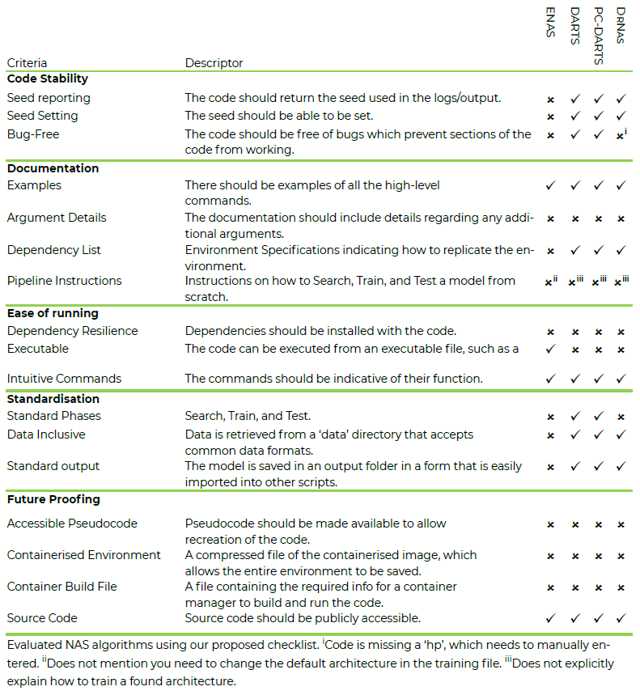
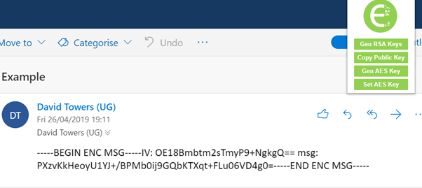
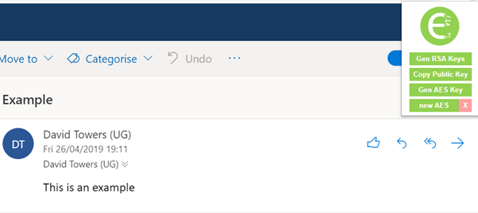
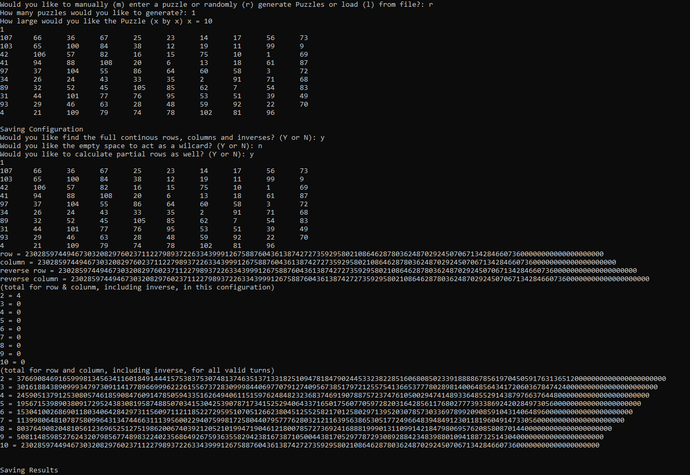
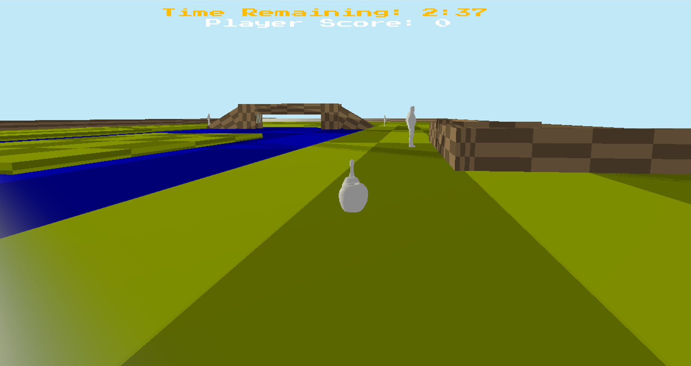
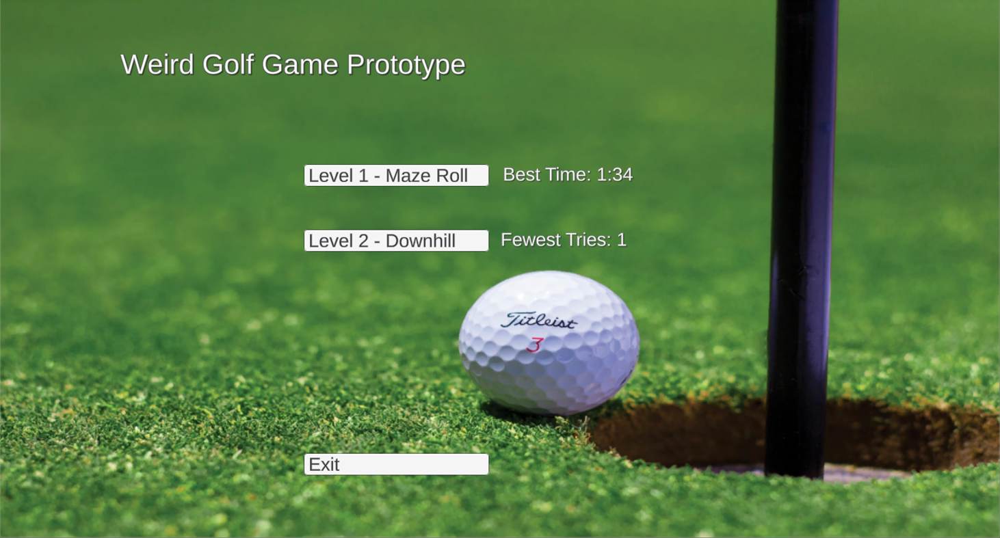
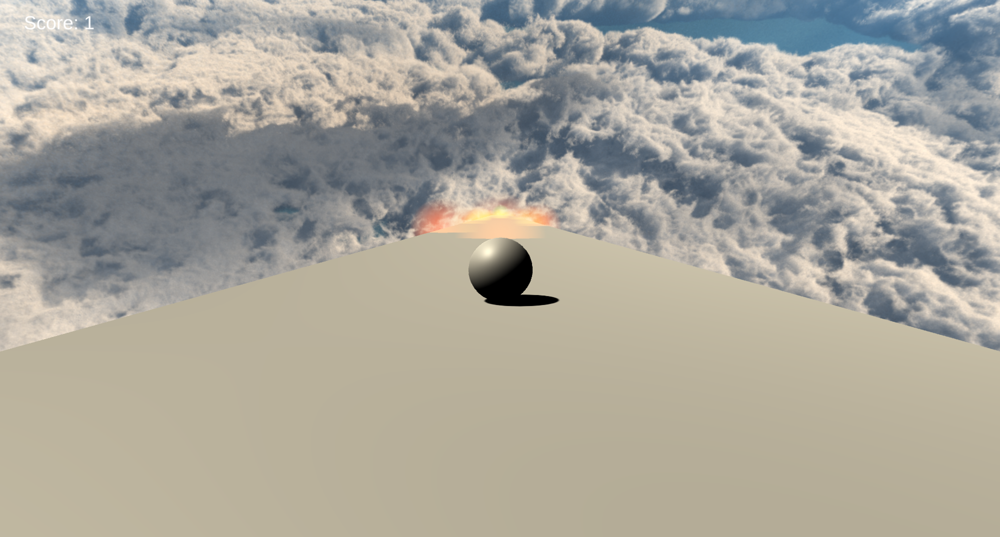
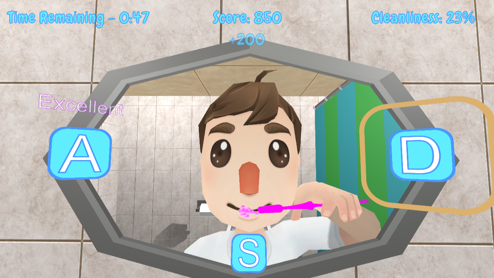

Insights from the Use of Previously Unseen Neural Architecture Search Datasets
Technologies used: Python 3
Github Repository
Accepted into the main proceedings of CVPR 2024, this paper discusses the eight datasets we created and have now publicly released from our annual unseen-data NAS competitions. While the datasets themselves where created by Rob Geada, I as co-author, wrote the paper and performed the experimentation and analysis of the datasets.
The paper can be found on CVPR's website here.
Long-term Reproducibility for Neural Architecture Search
Technologies used: Python 2 & 3
Gitlab Repository

Proposed Checklist to increase the level of reproducibility of NAS.
We submitted a four-page extended abstract to the Third Workshop on Neural Architecture Search at CVPR 2022. The paper, entitled "Long-term reproducibility for Neural Architecture Search", discussed issues that occur in the field of NAS when trying to reproduce NAS algorithms. The paper also proposes a checklist (see above) that we hope will increase the level of reproducibility of NAS algorithms developed by following it. The paper was accepted into the workshop.
The paper can be found on arXiv here.
Grapple Run
Technologies used: C# | Unity
Gitlab Repository
Grapple Run - Picture of the main menu
This is a game I worked on during the final year of my BSc. I made the game in Unity using assets off of the Unity asset store.
The game is a simple 2D platformer, where the player traverses through the levels until they run off-screen at the end of the level. However, the game is designed to only
be traversable via the grapplehook the player starts with. The player uses the grapplehook to swing over obstacles, lower themselves down and pull
themselves up, as well as a tool for defeating enemies. The game was made to a deadline over only a few months and only has four levels.
A playable version of the game can be found here.
Grapple Run picture of game being played
End-to-End Encryption Plugin
Technologies used: HTML | CSS | JS
Gitlab Repository
Encryption Plugin
For my BSc dissertation, I decided to make a chrome extension to provide end-to-end encryption across websites that don't offer it. This was motivated due to the lack of security that many companies employ over private messages and the amount of data these companies collect and sell from private messages. In some cases, you could stop using the service to avoid these practices. However, this is not always a option as you may still wish to use the service or may be required to.
For these reasons I used JavaScript to develop a plugin to allow encryption over unencrypted services. The plugin generated RSA keys to encrypt a shared AES key, that would be stored locally and used to encrypt and decrypt messages without entering the cleartext into the service of choice. At the time of developmen, this plugin was unqiue to others as it only used RSA (a slow encryption standard) to set-up a secure AES key, which is much faster.
While the plugin worked, services that I used to test the plugin have changed how they structure html which has caused the plugin to break. It was the first time I had used JavaScript for a project this big, and if I were to do it again, I would be able to make the code more generalisable and cleaner. I would probably also switch to TypeScript.


Combinatorial Problem
Technologies used: C++
Github Repository

For my 'Advanced Programming for Games' module. I was given the task to write a program that could calculate the number of possible consecutive rows and columns (including inverse) that could appear on a given configuration of a 15-Puzzle .
I originally made a brute force approach to solve this problem, however, the coursework specified that we should be able to modify the code to allow for puzzles of X by X size. I realised that it would not be suitable to bruteforce puzzles of a larger size, and figured out that using an equation involving factorials would generate more correct results.
Even after implementing the equation, a problem was that the numbers generated from puzzles larger than a 6 by 6 grid generated results that were bigger than an unsigned long long. To solve this problem I used an external library, InfInt by Sercan Tutar, which allowed puzzles up to, much larger sizes such as a 50 by 50 grid.
I attempted to use threading to make the program run faster. I was unsuccessful and in most cases, the use of threading ended up making the program run slower.
I have no plans to return to this project, although it was an interesting assignment that forced me to think outside the box. If I were to return, I would focus on the threading aspect as that is the area where I did not obtain as firm a grasp as I would've have to have.

Landscape in OpenGL
Technologies used: C++ | GLSL
Github Repository
For my 'Advanced Graphics for Games' module, I used OpenGL and GLSL to generate a changing landscape. Using a Tesselation Shader I was able to turn a quad into many points, which when combined with a geometry shader, allowed me to generate an effect looking like rain. Using glScissor I was able to remove an area of the screen which had been rendered, so I could then render a minimap in the location I cut out.
This project was made to a deadline. It is mostly complete, however, there are a few additions I would make if I were to continue development on this project I would...
- make the rain bigger, as due to compression it is not very visible in the YouTube video.
- add a greater fog effect when it starts raining.
- find a higher quality model for the tree.
- use post-processing to produce a bloom effect

Unoriginal Goose Game
Technologies used: C++
Github Repository
For my 'Advanced Game Technologies' I was given a specification for a game inspired by Untitled Goose Game. The purpose of this assignment was to implement features commonly found in games, the assignment was split into two parts Physics and Networking.
As part of implementing Physics, I implemented a collision detection system which worked for AABB/AABB, AABB/Shere, Sphere/Sphere and, Sphere/OBB collisions. I used constraints to make a rope bridge that droops and to make a gate that opens when a player attempts to walk through it.
- AABB - Axis Aligned Bounding Box.
- OBB - Oriented Bounding Box.
The game also allows networking, one player hosts a game as a server, and allows another player (client) to connect. Player position is sent using packets between both players to allow move and collide with each other.
The project was limited by time, unfortunately, this meant that there were bugs leftover in the code, most notably in the networking section. Players can not see when other players drop items, or when enemies are chasing other players. To fix this I could send a message to the server when a player drops their current item. I would also need to change the AI for the enemies to make sure they check both players. However, instead, to improve this project I would:
- Calculate the physics and game state on the server then send the position of the objects to each player using delta packets instead.
- I would also, add artificial lag to the server owner to prevent an unfair advantage due to 0 ping.
- I would either attempt to implement more OBB collisions myself or replace the code I implemented with a physics engine, such as PhysX

Weird Golf Game
Prototype
Technologies used: C# | Unity
Gitlab Repository

As part of our group project, we have been asked to make a Golf Game with unusual/interesting effects. We were asked to make a prototype using an engine such as Unity. I focused on rotating the floor and letting gravity move the player, instead of traditional player movement. I made two levels using this concept. One which moves the floor respective to the view of the camera, i.e. Pressing the forward key makes the floor directly in front go down, so the player rolls forward (Level 1 - Maze) and another which moves the rotates the floor either left or right as the player rolls downhill to a goal (Level 2 - Downhill).
For a prototype, I am happy with the outcome. Both levels, while small, are enjoyable and work as intended. We have not made any decisions as a team as to whether or not we are using this as a mechanic for a level yet. However, doing so has made the option easier to implement if we do decide to.


Water Conservation Game
Technologies used: C# | Unity

For my MSc dissertation I had the task of developing a game to help educate kids how they can conserve water in their every day life. I used Unity to make the game, as I have experience in Unity and thought I would be able to do more overall using Unity rather than Unreal which I not used before, or build it from the ground up, which would have been time consuming. Using Unity allowed me to use the asset store, however, this project required unqiue assets, and I do not have the skills required to create models, I did learn how to make simlpe animations in Blender for 3d models.
The game was made up of two mini-games that had the player perform everyday actions (brushing teeth and cleaning dishes) where performing the action well earned points, while using water lost points. The actions that conserved water, where very simple choices; while brushing their teeth, not rinsing the brush before hand is the most opitmal solution and is how the most points can be accumulated, while washing dishes simply required the player to put in the plug. These actions, are what water companies and other sources suggest are how many households can save litres of water.
While the game is very rudimentory, and development was impacted by the COVID-19 Pandemic over the first UK lockdown, I pleased with what is there and I believe it met the original breif. However, I believe the quality was impacted be several factors including the assets that I used, especially because they were not all in the same art style.